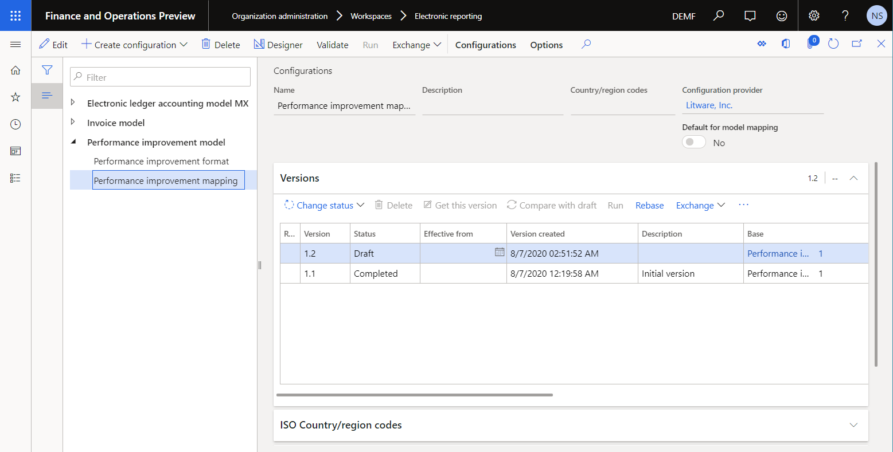
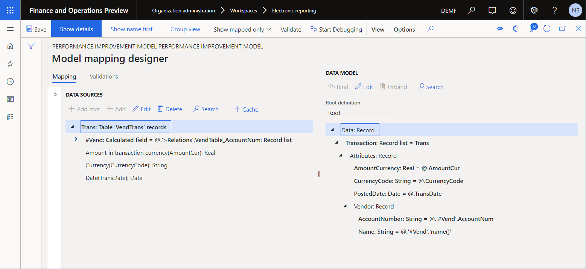
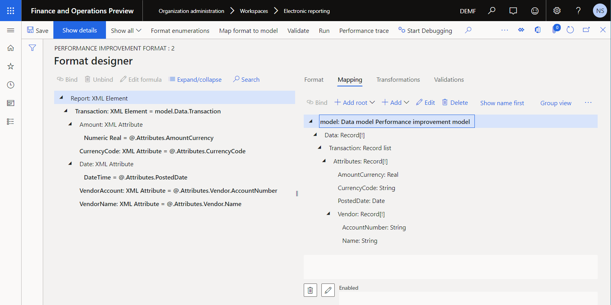
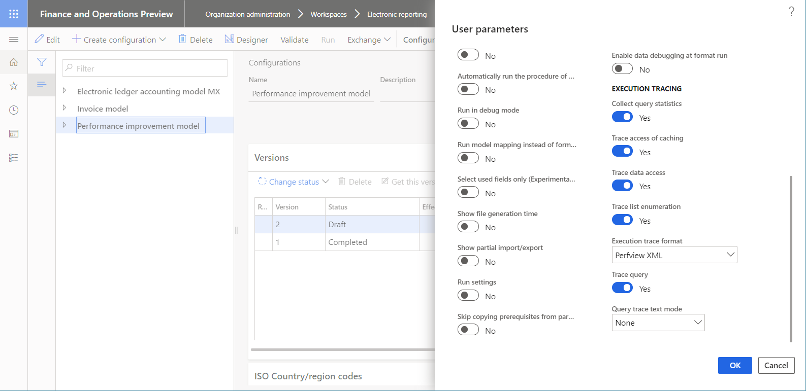
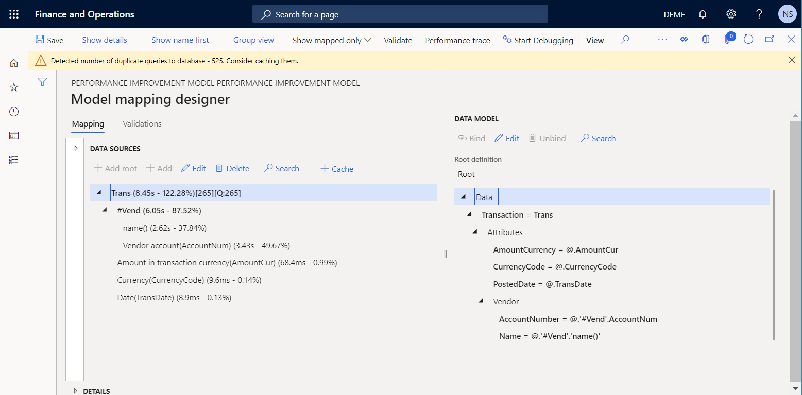
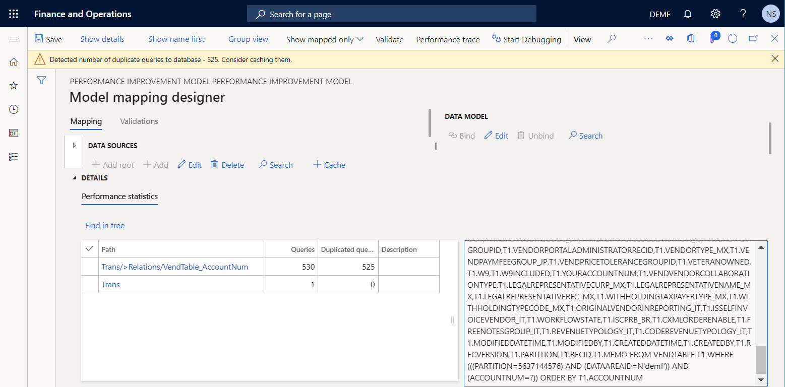
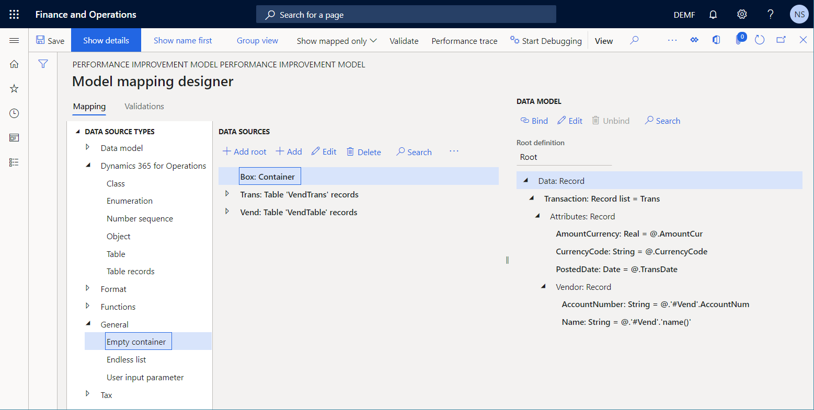
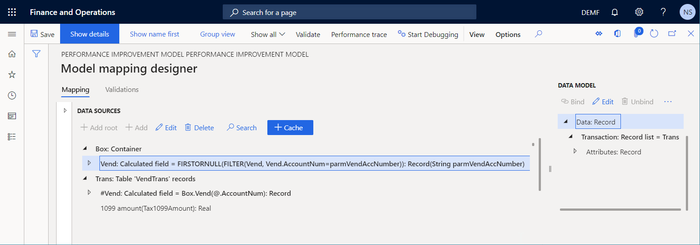
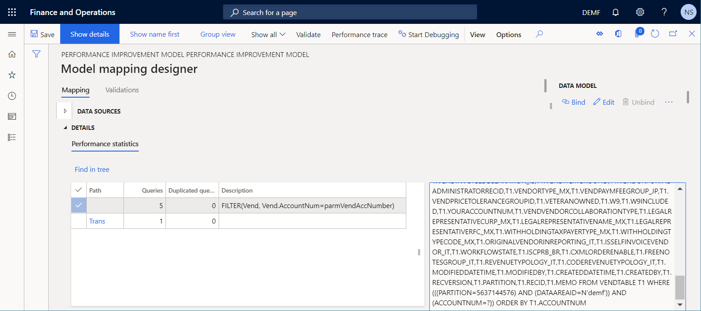
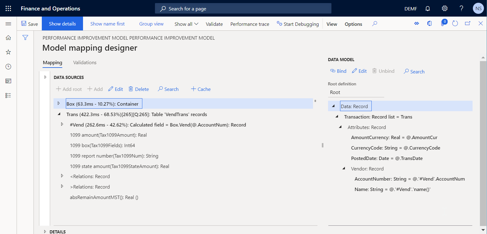

Verbessern Sie die Leistung von EB-Lösungen, indem Sie parametrisierte CALCULATED FIELD-Datenquellen hinzufügen
[!include[banner](../includes/banner.md)]In diesem Thema wird erklärt, wie Sie Leistungsnachverfolgungen von Elektronische Berichterstattung (ER)-Formaten übernehmen können, die ausgeführt werden, und die dann die Informationen aus diesen Nachverfolgungen verwenden, um die Leistung durch das Konfigurieren eines Parameters zu verbessern, indem die Berechnetes Feld-Datenquelle parameterisiert wird.
Im Rahmen des Prozesses, EB-Konfigurationen zu entwerfen, um Geschäftsdokumente zu generieren, definieren Sie die Methode, mit der Daten aus der Anwendung abgerufen werden und in der generierten Ausgabe eingegeben werden. Durch das Entwerfen einer parametrisierten EB-Datenquelle des Typs Berechnetes Feld können Sie die Anzahl der Datenbankaufrufe reduzieren und den Zeit- und Kostenaufwand für das Sammeln der Details der Ausführung des EB-Formats erheblich reduzieren.
Voraussetzungen
Um die Beispiele in diesem Thema abzuschließen, müssen Sie den Zugriff auf eine der folgenden Rollen haben:
- Entwickler für elektronische Berichterstellung
- Funktionaler Berater für elektronische Berichterstellung
- Systemadministrator
Das Unternehmen muss auf DEMF festgelegt sein.
Folgen Sie den Schritten in Anhang 1 dieses Themas, um die Komponenten der Microsoft EB-Beispiellösung herunterzuladen, die zum Abschließen der Beispiele in diesem Thema erforderlich ist.
Befolgen Sie die Schritte in Anlage 2 dieses Themas, um den minimalen Satz von EB-Parametern zu konfigurieren, der zur Verwendung des EB-Frameworks erforderlich ist, um die Leistung der Microsoft EB-Beispiellösung zu verbessern.
EB-Beispiellösung importieren
Stellen Sie sich vor, Sie müssen eine neue EB-Lösung entwerfen, um einen neuen Bericht zu generieren, der Kreditorentransaktionen zeigt. Aktuell können Sie die Transaktionen für einen ausgewählten Kreditor auf der Seite Kreditorenbuchungen suchen (wechseln Sie zu Kreditor > Kreditoren > Alle Kreditoren, wählen Sie einen Kreditor aus, und dann, im Aktivitätsbereich unter der Registerkarte Kreditor in der Gruppe Transaktionen wählen Sie Transaktionen). Sie möchten jedoch alle Kreditorenbuchungen zusammen in einem elektronischen Dokument im XML-Format haben. Diese Lösung besteht aus mehreren EB-Konfigurationen, die das erforderliche Datenmodell, die Modellzuordnung und Formatkomponenten enthalten.
Der erste Schritt besteht darin, die Beispiel-EB-Lösung zu importieren, um einen Bericht über Lieferantentransaktionen zu erstellen.
Melden Sie sich bei der Instanz von Microsoft Dynamics 365 Finance an, die für Ihr Unternehmen bereitgestellt wurde.
In diesem Thema erstellen und modifizieren Sie Konfigurationen für das Beispielunternehmen Litware, Inc.. Stellen Sie sicher, dass dieser Konfigurationsanbieter Ihrer Finance-Instanz hinzugefügt wurde und als aktiv markiert wurde. Weitere Informationen finden Sie unter Konfigurationsanbieter erstellen und als aktiv markieren.
Im Arbeitsbereich Elektronische Berichterstellung wählen Sie die Kachel Berichterstellungskonfigurationen aus.
Auf der Seite Konfigurationen importieren Sie die EB-Konfigurationen, die Sie als Voraussetzung nach Finance heruntergeladen haben, in der folgenden Reihenfolge: Datenmodell, Modellzuordnung, Format. Führen Sie für jede Konfiguration die folgenden Schritte aus:
- Wählen Sie im Aktivitätsbereich Austausch > Aus XML-Datei laden aus.
- Wählen Sie Durchsuchen aus, und wählen Sie die entsprechende Datei für die erforderliche EB-Konfiguration im XML-Format auszuwählen.
- Wählen Sie OK.

Die EB-Beispiellösung überprüfen
Die Modellzuordnung überprüfen
Erweitern Sie auf der Seite Konfigurationen in der Konfigurationsstruktur Leistungsverbesserungsmodell und wählen Sie dann Leistungsverbesserungszuordnung aus.
Wählen Sie im Aktivitätsbereich Designer aus.
Wählen Sie auf der Seite Modell für Datenquellenzuordnung im Aktionsbereich Designer aus.
Diese EB-Modellzuordnung ist für die Durchführung der folgenden Aktionen vorgesehen:
- Rufen Sie die Liste der Lieferantentransaktionen ab, die in der VendTrans-Tabelle gespeichert sind (Trans-Datenquelle).
- Rufen Sie für jede Transaktion aus der VendTable-Tabelle den Datensatz eines Anbieters ab, für den die Transaktion gebucht wurde (#Vend-Datenquelle).
Note
Die #Vend-Datenquelle ist so konfiguriert, dass der entsprechende Lieferantendatensatz unter Verwendung der vorhandenen n:1-Beziehung @.'>Relations'.VendTable_AccountNum abgerufen wird.
Die Modellzuordnung in dieser Konfiguration implementiert das Basisdatenmodell für alle EB-Formate, für die dieses Modell erstellt und in Finance ausgeführt wird. Demzufolge wird der Inhalt der Trans -Datenquellen für EB-Formate wie abstrakte Modell-Datenquellen bereitgestellt.

Schließen Sie die Seite Modellzuordnungsdesigner.
Schließen Sie die Seite Modell für Datenquellenzuordnung.
Überprüfen des Formats
Erweitern Sie auf der Seite Konfigurationen in der Konfigurationsstruktur Leistungsverbesserungsmodell und wählen Sie dann Leistungsverbesserungsformat aus.
Wählen Sie im Aktivitätsbereich Designer aus.
Auf der Seite Formatdesigner wählen Sie auf der Registerkarte Zuordnung Erweitern/Reduzieren aus.
Erweitern Sie die Elemente Modell, Daten, und Transaktion.
Dieses EB-Format dient zum Generieren eines Lieferantentransaktionsberichts im XML-Format.

Seite Format-Designer schließen.
Ausführen der EB-Beispiellösung, um Ausführung nachzuverfolgen
Stellen Sie sich vor, dass Sie das Entwerfen der ersten Version der EB-Lösung beendet haben. Jetzt möchten Sie die Lösung in Ihrer Finance-Instanz testen und die Ausführungsleistung analysieren.
Aktivieren der EB-Leistungsnachverfolgung
Wählen Sie das Unternehmen DEMF aus.
Befolgen Sie die Schritte in Aktivieren der EB-Leistungsverfolgung, um eine Leistungsverfolgung zu generieren, während ein EB-Format ausgeführt wird.

Das EB-Format ausführen
- Wechseln Sie zu Organisationsverwaltung > Elektronische Berichterstellung > Konfigurationen.
- Auf der Seite Konfigurationen in der Konfigurationsstruktur wählen Sie das Element Leistungsverbesserungsformat aus.
- Wählen Sie im Aktivitätsbereich auf Ausführen.
Verwenden Sie die Leistungsverfolgung, um die Leistung der Modellzuordnung zu analysieren
- Auf der Seite Konfigurationen in der Konfigurationsstruktur wählen Sie das Element Leistungsverbesserungszuordnung aus.
- Wählen Sie im Aktivitätsbereich Designer aus.
- Wählen Sie auf der Seite Modellzuordnung im Aktionsbereich Designer aus.
- Auf der Seite Modellzuordnungsdesigner im Aktivitätsbereich wählen Sie Leistungsnachverfolgung aus.
- Wählen Sie die zuletzt generierte Nachverfolgung aus und wählen Sie dann OK.
Neue Informationen sind jetzt für einige Datenquellelemente der aktuellen Modellzuordnung verfügbar:
- Tatsächlicher Zeitaufwand für das Abrufen von Daten mithilfe der Datenquelle
- Die gleiche Zeit, ausgedrückt als Prozentsatz der gesamten Zeit, die für das Ausführen der gesamten Modellzuordnung aufgewendet wurde

Das Leistungsstatistik-Raster zeigt, dass die Trans-Datenquelle die VendTrans-Tabelle einmal aufruft. Der Wert [265][M: 265] der Trans-Datenquelle gibt an, dass 265 Lieferantentransaktionen aus der Anwendungstabelle abgerufen und an das Datenmodell zurückgegeben wurden.
Das Leistungsstatistik-Raster zeigt auch, dass die aktuelle Modellzuordnung die Datenbankanforderungen dupliziert, während die #Vend-Datenquelle ausgeführt wird. Diese Verdopplung tritt aus folgenden Gründen auf:
Die Lieferantentabelle wird für jede der 265 durchlaufenen Lieferantentransaktionen zweimal aufgerufen, was insgesamt 530 Aufrufen entspricht:
- Ein Anruf wird getätigt, um die Lieferantenkontonummer einzugeben.
- Ein Anruf wird getätigt, um den Lieferantennamen einzugeben.
Die Lieferantentabelle wird für jede durchlaufene Lieferantentransaktion aufgerufen, obwohl die abgerufenen Transaktionen nur für fünf Lieferanten gebucht wurden. Von den 530 Anrufen sind 525 Duplikate. Die folgende Abbildung zeigt die Nachricht, die Sie über doppelte Aufrufe (Datenbankanforderungen) erhalten.

Beachten Sie, dass mehr als 80 Prozent (ungefähr sechs Sekunden) der Gesamtausführungszeit für die Modellzuordnung (ca. acht Sekunden) für das Abrufen von Werten aus der VendTable-Anwendungstabelle aufgewendet wurden. Dieser Prozentsatz ist zu groß für zwei Attribute von fünf Anbietern im Vergleich zum Informationsvolumen aus der VendTrans-Anwendungstabelle.
Um die Anzahl der Anrufe zu verringern, die getätigt werden, um die Lieferantendetails für jede Transaktion abzurufen, und um die Leistung der Modellzuordnung zu verbessern, können Sie Caching für die #Vend-Datenquelle verwenden.
Note
Die Trans\#Vend-Datenquelle wird im Rahmen der aktuellen Transaktion der Trans-Datenquelle zur Laufzeit zwischengespeichert.
Durch das Zwischenspeichern der #Vend-Datenquelle reduzieren die Anzahl der doppelten Anrufe von 525 auf 260, beseitigen die Duplizierung jedoch nicht vollständig. Um die Verdopplung vollständig zu vermeiden, können Sie eine neue parametrisierte Datenquelle des Typs Berechnetes Feld konfigurieren.
Verbessern der Modellzuordnung auf der Grundlage von Informationen aus der Ausführungsnachverfolgung
Die Logik der Modellzuordnung ändern
Befolgen Sie diese Schritte, um das Caching und eine Datenquelle des Typs Berechnetes Feld zu verwenden, um doppelte Aufrufe der Datenbank zu vermeiden.
Auf der Seite Konfigurationen in der Konfigurationsstruktur wählen Sie das Element Leistungsverbesserungszuordnung aus.
Wählen Sie im Aktivitätsbereich Designer aus.
Wählen Sie auf der Seite Modellzuordnung im Aktionsbereich Designer aus.
Befolgen Sie auf der Modellzuordnungsdesigner-Seite diese Schritte, um eine Datenquelle des Typs Tabellendatensätze hinzuzufügen, um auf Datensätze in der VendTable-Anwendungstabelle zuzugreifen:
- Erweitern Sie im Bereich Datenquellentypen den Eintrag Dynamics 365 for Operations und wählen Sie Tabellendatensätze aus.
- Wählen Sie Stamm hinzufügen aus.
- Geben Sie im Drop-Down-Dialogfeld im Feld Name Vend ein.
- Geben Sie im Feld Tabelle den Eintrag VendTable ein.
- Wählen Sie OK.
Sie können Aufrufe von Datenquellen des Typs Berechnetes Feld nur prameterisieren, wenn sich diese Datenquellen in einem Container befinden. Befolgen Sie daher diese Schritte, um eine Datenquelle des Typs Leerer Container hinzuzufügen, um eine neue parametrisierte Datenquelle des Typs Berechnetes Feld zu speichern:
- Erweitern Sie im Bereich Datenquellentypen den Eintrag Allgemein und wählen Sie Leerer Container aus.
- Wählen Sie Stamm hinzufügen aus.
- Geben Sie im Drop-Down-Dialogfeld im Feld Name Box ein.
- Wählen Sie OK.

Befolgen Sie diese Schritte, um eine parametrisierte Datenquelle des Typs Berechnetes Feld hinzuzufügen:
- Wählen Sie Box im Bereich Datenquellen aus.
- Erweitern Sie im Bereich Datenquellentypen Funktionen, und wählen Sie Berechnetes Feld aus.
- Wählen Sie Hinzufügen aus.
- Geben Sie im Drop-Down-Dialogfeld im Feld Name Vend ein.
- Wählen Sie Formel bearbeiten aus.
- Wählen Sie auf der Formeldesigner-Seite Parameter, um die Parameter anzugeben, die beim Aufruf dieser Datenquelle angegeben werden müssen.
- Wählen Sie im Dialogfeld Parameter Neu aus.
- Geben Sie im Feld Name parmVendAccNumber ein.
- Wählen Sie im Feld Typ Zeichenfolge aus.
- Wählen Sie OK.
- Geben Sie im Formel-Feld FIRSTORNULL(FILTER(Vend, Vend.AccountNum=parmVendAccNumber)) ein.
- Wählen Sie Speichern und schließen Sie die Seite Formeldesginer.
- Wählen Sie OK aus, um die neue Datenquelle hinzuzufügen.
Führen Sie die folgenden Schritte aus, um die hinzugefügte Datenquelle während der Ausführung als zwischengespeichert zu markieren:
- Wählen Sie im Bereich Datenquellen den Eintrag Box\Vend aus.
- Wählen Sie Cache aus.
Note
Die Box\Vend-Datenquelle wird im Rahmen aller Kreditorenbuchungsseite der Trans-Datenquelle zur Laufzeit zwischengespeichert.
Befolgen Sie diese Schritte, um die verschachtelte Trans\#Vend-Datenquelle zu aktualisieren, so dass die Box\Vend-Datenquelle verwendet wird:
- Erweitern Sie im Bereich Datenquellen den Eintrag Trans.
- Wählen Sie die Trans\#Vend-Datenquelle, und wählen Sie dann Bearbeiten > Formel bearbeiten.
- Geben Sie auf der Formeldesigner-Seite im Formel-Feld Box.Vend(@.AccountNum) ein.
- Wählen Sie Speichern und dann schließen Sie die Seite Formeldesginer.
- Wählen Sie OK, um Ihre Änderungen an der ausgewählten Datenquelle abzuschließen.
Wählen Sie Speichern aus.

Schließen Sie die Seite Modellzuordnungsdesigner.
Schließen Sie die Seite Modellzuordnungen.
Die geänderte Version der EB-Modellzuordnung abschließen
- Auf der Seite Konfigurationen im Inforegister Versionen wählen Sie die Version 1.2 der Konfiguration Leistungsverbesserungszuordnung aus.
- Wählen Sie Status ändern > Abschließen und dann OK.
Ausführen der geänderten EB-Lösung, um Ausführung nachzuverfolgen
Wiederholen Sie die Schritte im Abschnitt Das EB-Format ausführen weiter oben in diesem Thema, um eine neue Leistungsnachverfolgung zu generieren.
Verwenden Sie die Leistungsüberwachung, um Regulierungen der Modellzuordnung zu analysieren
- Auf der Seite Konfigurationen in der Konfigurationsstruktur wählen Sie das Element Leistungsverbesserungszuordnung aus.
- Wählen Sie im Aktivitätsbereich Designer aus.
- Wählen Sie auf der Seite Modellzuordnung im Aktionsbereich Designer aus.
- Auf der Seite Modellzuordnungsdesigner im Aktivitätsbereich wählen Sie Leistungsnachverfolgung aus.
- Wählen Sie die zuletzt generierte Nachverfolgung aus und wählen Sie dann OK.
Beachten Sie, dass die Regulierungen, die Sie an der Modellzuordnung vorgenommen haben, doppelte Abfragen an eine Datenbank beseitigt haben. Die Anzahl der Aufrufe an Datenbanktabellen und Datenquellen für diese Modellzuordnung ist auch reduziert worden.

Die Gesamtausführungszeit wurde ungefähr 20 Mal reduziert (von ungefähr 8 Sekunden auf ungefähr 400 Millisekunden). Daher wurde die Leistung der gesamten EB-Lösung verbessert.

Anhang 1: Laden Sie die Komponenten der Microsoft EB-Beispiellösung herunter
Sie müssen die folgenden Dateien herunterladen und lokal speichern.
| Datei | Inhalt |
|---|---|
| Leistungsverbesserung model.version.1 | Beispiel-EB-Datenmodell-Konfiguration |
| Leistungsverbesserung mapping.version.1.1 | Beispiel-EB-Modellzuordnungskonfiguration |
| Leistungsverbesserung format.version.1.1 | Beispiel-EB-Formatkonfiguration |
Anhang 2: Konfigurieren des EB-Frameworks
Bevor Sie das EB-Framework verwenden können, um die Leistung der Microsoft EB-Beispiellösung zu verbessern, müssen Sie den minimalen Satz von EB-Parametern konfigurieren.
Parameter der elektronischen Berichterstellung konfigurieren
Wechseln Sie zu Organisationsverwaltung > Arbeitsbereiche > Elektronische Berichterstellung.
Wählen Sie auf der Seite Lokalisierungskonfigurationen im Bereich Zugehörige Links die Option Parameter für elektronische Berichterstellung aus.
Auf der Seite Parameter für elektronische Berichterstellung legen Sie auf der Registerkarte Allgemein die Option Entwurfsmodus aktivieren auf Ja fest.
Legen Sie auf der Registerkarte Anhänge die folgenden Parameter fest:
- Wählen Sie im Feld Konfigurationen den Dateityp für das DEMF-Unternehmen aus.
- Wählen Sie in den Feldern Einzelvorgangsarchiv, Temporär, Grundlage und Andere den Dateityp aus.
Weitere Informationen zu EB-Parametern finden Sie unter Konfigurieren des EB-Frameworks (This is an external link).
Aktivieren eines EB-Konfigurationsanbieters
Jede hinzugefügte EB-Konfiguration wird als Eigentum eines EB-Konfigurationsanbieters markiert. Der EB-Konfigurationsanbieter, der im Arbeitsbereich Elektronische Berichterstellung aktiviert ist, wird zu diesem Zweck verwendet. Daher müssen Sie im Arbeitsbereich Elektronische Berichterstellung einen EB-Konfigurationsanbieter aktivieren, bevor Sie mit dem Hinzufügen oder Bearbeiten von EB-Konfigurationen beginnen.
Note
Nur der Besitzer einer EB-Konfiguration kann die Konfiguration bearbeiten. Daher muss im Arbeitsbereich Elektronische Berichterstellung der entsprechende EB-Konfigurationsanbieter aktiviert werden, bevor eine EB-Konfigurationen bearbeitet werden kann.
Überprüfen der Liste der EB-Konfigurationsanbieter
- Wechseln Sie zu Organisationsverwaltung > Arbeitsbereiche > Elektronische Berichterstellung.
- Wählen Sie auf der Seite Lokalisierungskonfigurationen im Bereich Zugehörige Links die Option Konfigurationsanbieter aus.
- Auf der Seite Konfigurationsanbietertabelle hat jeder Anbieterdatensatz einen eindeutigen Namen und eine eindeutige URL. Überprüfen Sie den Inhalt dieser Seite. Wenn bereits ein Datensatz für Litware, Inc. vorhanden ist, überspringen Sie die nächste Prozedur Hinzufügen eines neuen EB-Konfigurationsanbieters.
Hinzufügen eines neuen EB-Konfigurationsanbieters
- Wechseln Sie zu Organisationsverwaltung > Arbeitsbereiche > Elektronische Berichterstellung.
- Wählen Sie auf der Seite Lokalisierungskonfigurationen im Bereich Zugehörige Links die Option Konfigurationsanbieter aus.
- Wählen Sie auf der Seite Konfigurationsanbieter die Option Neu aus.
- Geben Sie im Feld Name Litware, Inc. ein.
- Geben Sie im Feld Internetadresse
https://www.litware.comein. - Wählen Sie Speichern aus.
Aktivieren eines EB-Konfigurationsanbieters
- Wechseln Sie zu Organisationsverwaltung > Arbeitsbereiche > Elektronische Berichterstellung.
- Wählen Sie auf der Seite Lokalisierungskonfigurationen im Bereich Konfigurationsanbieter die Kachel Litware, Inc. aus. Wählen Sie dann Als aktiv festlegen aus.
Weitere Informationen zu EB-Konfigurationsanbietern finden Sie unter Erstellen von Konfigurationsanbietern und Markieren als aktiv.